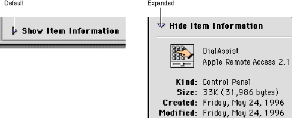
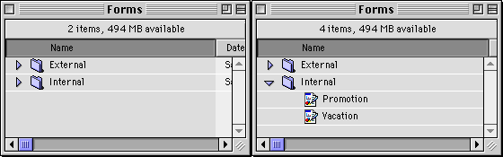

Disclosure Triangles
The disclosure triangle is a control that allows the display or "disclosure" of information which elaborates on the primary information in a window.One way to use disclosure triangles is to provide a way for users to expand a dialog box or control panel. When the user clicks on the disclosure triangle, the triangle rotates downward and the window expands to provide supplemental information. Clicking on the triangle again rotates the triangle back to the right and restores the original appearance of the window. Figure 2-23 shows a file copy dialog box in its default configuration and with the disclosure triangle turned to reveal additional details of the copy operation.
Figure 2-23 A disclosure triangle revealing additional information

Another familiar implemention of disclosure triangles is in the Finder's list view. The triangle appears next to the icon of each folder in the window. The user clicks the triangle to expand the view by revealing a list of the contents of the folder without opening it. The triangle rotates downward when the folder is expanded, which tells the user that the view is expanded even in cases when the folder is empty. Clicking the triangle again restores the view to its original (collapsed) state and turns the triangle back to the right. Figure 2-24 shows the disclosure triangle in expanded and collapsed positions.
Figure 2-24 Disclosure triangles used in Finder list view

This use of a disclosure triangle is also known as an "outline triangle," since it provides a function similar to the Outline view used in many applications.
In the Finder's list view, a disclosure triangle may be turned to the open position by using the Command-right arrow keyboard equivalent and closed by using Command-left arrow. If you use disclosure triangles in your application to provide expanded/collapsed list views, you should also provide these keyboard equivalents.
For more information on laying out disclosure triangles in dialog boxes, see "Disclosure Triangle Layout" (page 80).